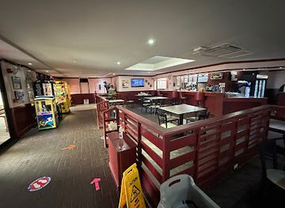

• J's Restaurant
J's Restaurant has two locations located in Gualo Rai and San Jose. My go to spot would be the one located in Gualo Rai, because of the long history of my family and I going there. My favorite meals I always order are the Cheeseburger with Fries and the Hamburger Steak. They also have a small arcade area for entertainment.
